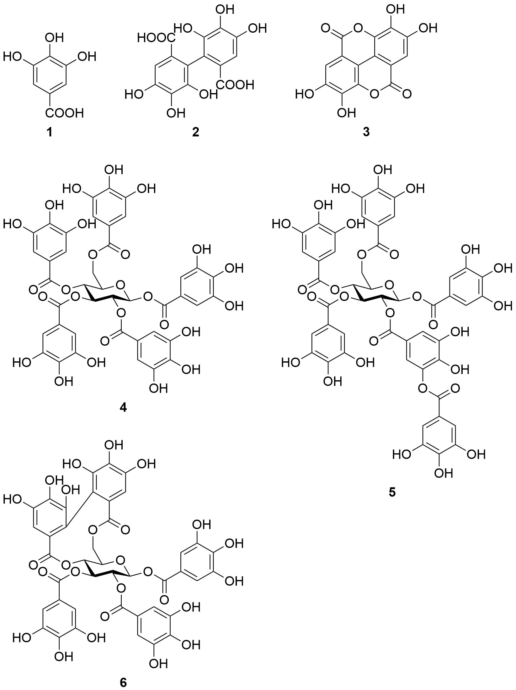
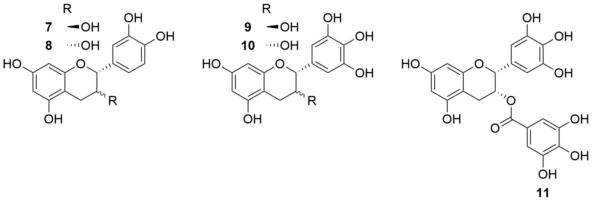
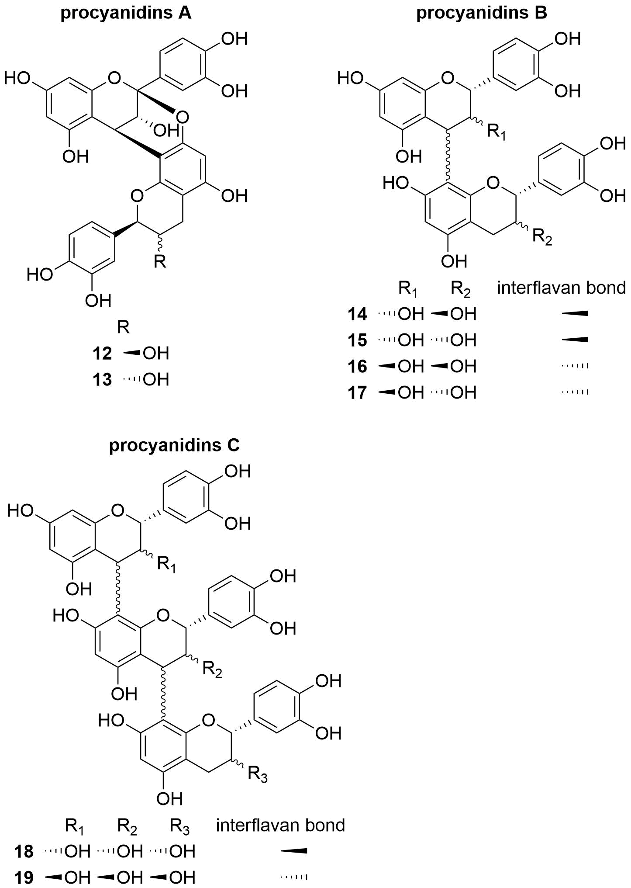
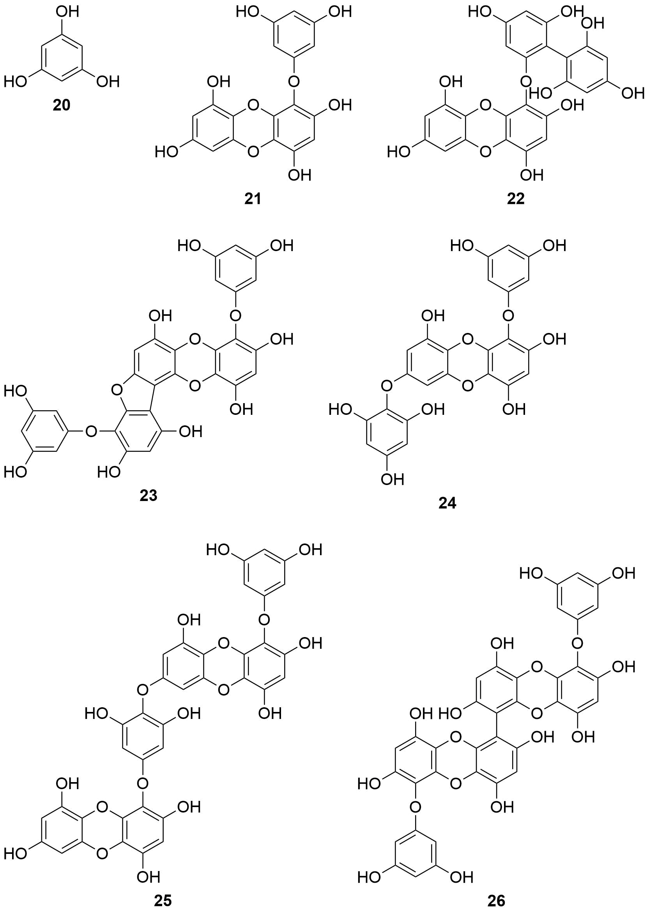
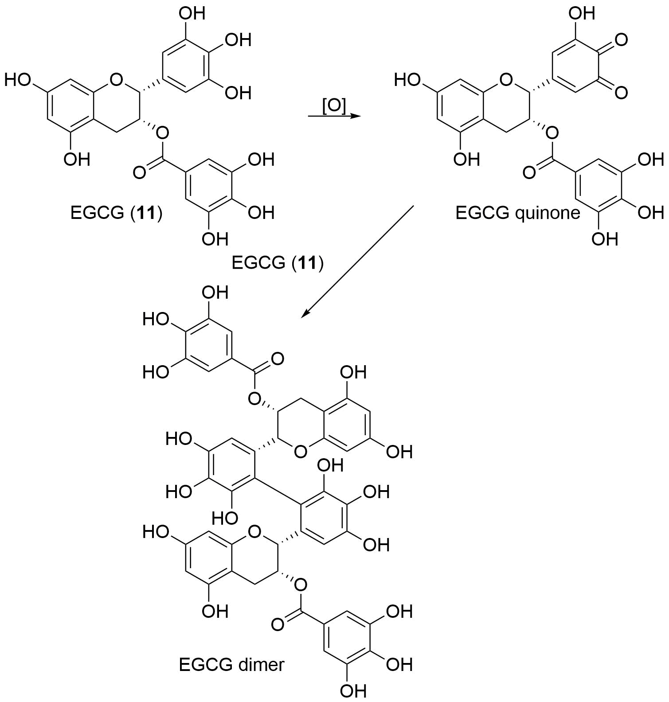
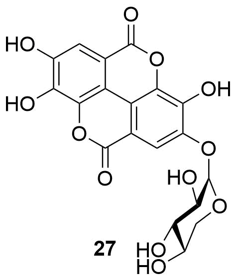
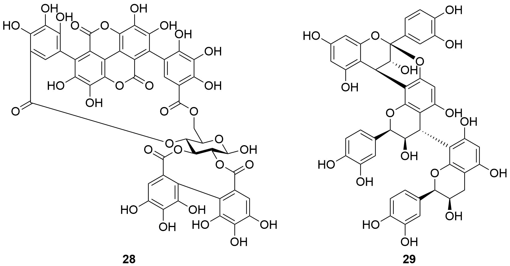

Natural polyphenols are a wide class of secondary plant metabolites and represent an abundant antioxidant component of human diet. An important, but often neglected, group of natural polyphenols are tannins. This review offers a general description of chemistry of hydrolysable and condensed tannins (proanthocyanidins), and phlorotannins, the mechanisms of their antioxidation action, like free radical scavenging activity, chelation of transition metals, inhibition of prooxidative enzymes and lipid peroxidation. The mechanisms of action of inhibition of various enzyme systems, antibacterial, antiviral, antiprotozoal, anticarcinogenic, antidiabetic, hepatoprotective, cardiovascular system preventing, immunomodulation, antiallergic and anti-inflammatory effects as well as the absorption, metabolic fate and positive in vivo effects of tannins are enclosed.
Keywords: Adverse effects, biological activity, metabolism, phlorotannins, perspectives, tannins.There are many natural compounds with wide scale of biological activities. Especially, there is a great interest in polyphenols, which have been studied for many years and are still very active domain of research because of their prospective use in health protection. Polyphenols are a wide class of substances, which contain over 8000 compounds, from those with simple structure (e.g. phenolic acids) to the polymeric substances like some condensed tannins.1, 2 Flavonoids are very important and well known group of compounds with various pharmacological effects.3-7 An important, but often neglected group of polyphenols are also tannins with lower molar weight. Since 1950, about 25 thousand papers, thereof approximately 1700 reviews, were dedicated to tannins in wider scale.
In 1957, Bate-Smith and Swain defined plant tannins as water-soluble phenolic compounds having a molecular weight between 500 and 3000 Dalton.8 Their characteristic properties include forming of insoluble complexes with proteins, polysaccharides, nucleic acids, or alkaloids. Within this general character, tannins exhibit number of various bioactivities, which are often related to their antioxidant activity. Tannins are classified into two major groups on the basis of their structure: the hydrolysable and the condensed tannins. Another group of tannins is formed by complex tannins.9 Currently, phlorotannins, condensates of phloroglucinol which are present in sea algae, are also classified as tannins.9 This review is focused on all groups of tannins, nevertheless more attention is given to cendensed tannins, because they are represented in nature more widely and are important components of human food, and on relatively new group of substances from seaweed — phlorotannins. This review continues the review study of the authors group published some time ago and extends the view of the very important group of natural substances that are commonly utilized in the diet.10, 11
Recently, series of review papers focused on these substances, especially hydrolysable tannins — compounds of medicinal and food plants,12 chemical reactivity of C-glycosylated ellagitannins in relation to wine chemistry and biological activity,13 synthesis of ellagitannins14 and biological activities,15 chemical-ecological aspects,16 and pharmacological activity, or antinutritive factors in plants.17 Some species of plants are interesting concerning their possible use: e.g. Emblica offcinalis,18, 19 Phyllanthus amarus,20 and Terminalia arjuna.21
Hydrolysable tannins are compounds containing a central core of glucose or another polyol esterified with gallic acid, also called gallotannins, or with hexahydroxydiphenic acid, also called ellagitannins. Pentagalloylglucose (PGG) is a basic unit of the metabolism of hydrolysable tannins, from which other molecules are derived. Gallotannins consist of a central molecule, such as glucose, surrounded by gallic acid (1) units. Ellagitannins contain hexahydroxydiphenic acid (2), or its dilactone form, ellagic acid (3) (Figure. 1). The great variety in the structure of these compounds is due to the many possibilities in formation of oxidative linkages. Intermolecular oxidation reactions give rise to many oligomeric compounds having a molecular weight between 2000 and 5000 Dalton.22
Figure 1. Characteristic structures of hydrolysable tannins: gallic acid (1); hexahydroxydiphenic acid (2); ellagic acid (3); pentagalloylglucose (4), the basic unit of hydrolysable tannins; 2-O-digalloyl-1,3,4,6-tetra-O-galoyl-β-D-glucopyranose (5), the example of gallotannin; tellimagradin II (6), the typical ellagitannin.
Plants are able to biosynthesize gallotannins, ellagitannins, or form the mixture of both types of hydrolysable tannins. While condensed tannins are presented in many species of higher plants, presence of hydrolysable tannins is limited to Angiospermae, Dicotyledons. Gallic acid derivatives are presented in several families, e.g. Ericaceae, Geraniaceae, or Fagaceae. Ellagitannins are presented in subclasses Hamamelidae, Dilleniidae, and Rosidae species.23-25
Condensed tannins are oligomers or polymers composed of flavan-3-ol nuclei. They are also called proanthocyanidins, because they are decomposed to anthocyanidins in heated ethanol solutions (under acidic conditions). The most frequent basic units of condensed tannins are derivatives of flavan-3-ols: (+)-catechin (7), (-)-epicatechin (8), (+)-gallocatechin (9), and major polyphenols of green tea: (-)-epigallocatechin (EGC, 10) and (-)-epigallocatechin gallate (EGCG, 11) (Figure. 2). The structural diversity is caused by variation in hydroxylation pattern, stereochemistry at the three chiral centers, and the location and type of interflavan linkage. Furthermore, derivatisations as O-methylation, C- and O-glycosylation, and O-galloylation are frequently reported. Proanthocyanidins are classified according to their hydroxylation pattern into several subgroups, e.g. procyanidins (3,5,7,3',4'-OH), prodelphinidins (3,5,7,3',4',5'-OH), propelargonidins (3,5,7,4'-OH), profisetinidins (3,7,3',4'-OH), prorobinetinidins (3,7,3',4',5'-OH), proguibourtinidins (3,7,4'-OH), proteracacinidins (3,7,8,4'-OH), and promelacacinidins (3,7,8, 3',4'-OH).26, 27
Figure 2. The most frequent structure units of condensed tannins: (+)-catechin (7); (-)-epicatechin (8); (+)-gallocatechin (9); (-)-epigallocatechin (10); (-)-epigallocatechin gallate (11).
Proanthocyanidins of the B-type (dimeric) and C-type (trimeric) are characterized by single linked flavanyl units, usually between C-4 of the flavan-3-ol of the upper unit and C-6 or C-8 of the lower unit. Proanthocyanidins of the A-type possess an additional ether linkage between C-2 of the upper unit and a 7 or 5-OH of the lower unit (Figure. 3).26, 27 Polymeres, composed of up to fifty monomers, are formed by the addition of more flavans. Especially polyepicatechins and copolymers of procyanidins and prodelphinidins are common.
Figure 3. Oligomeric procyanidins: procyanidin A-1 (epicatechin-(4β→8,2 β→7)-catechin) (12); procyanidin A-2 (epicatechin-(4β→8,2β→7)-epicatechin) (13); procyanidin B-1 (epicatechin- (4β→8)-catechin) (14); procyanidin B-2 (epicatechin-(4β→8)-epicatechin) (15); procyanidin B-3 (catechin-(4β→8)-catechin) (16); procyanidin B-4 (catechin-(4β→8)-epicatechin) (17); procyanidin C-1 (epicatechin-(4β→8)-epicatechin-(4β→8)-epicatechin) (18); procyanidin C-2 (epicatechin-(4β→8)-catechin-(4β→8)-catechin) (19).
Proanthocyanidins have been isolated from many species of plants, and they are also important components of human food. The largest group of proanthocyanidins is formed by procyanidins. Procyanidin B-1 (14) is presented in grapefruit, sorghum, and cranberries, B-2 (15) in apples, cocoa beans, and cherries, B-3 (16) in strawberries and hops, and B-4 (17) in raspberries and blackberries.28, 29 Well-known source of protoanthocyanidins is also red wine, green tea, cocoa and chocolate.30
Widely presented group of polyphenolic substances based on phloroglucinol (20), phlorotannins, was found in marine brown algae (Phaeophyta). The phloroglucinol units are differently bound in these substances; they are considerably hydrophilic substances, with the relative molecular weight between 126 and 650 kDa, containing both phenyl- and phenoxy-groups. On the basis of the condensation of the units, they can be classified into four subgroups: fuhalols, phlorethols (phlorotannins with ether bond), fucophlorethols (with ether bond and phenyl connection) and eckols (with dibenzodioxin structural elements). The basic structures are depicted on Figure. 4. These substances were found especially in Ecklonia cava, Ecklonia stolonifera, Ecklonia kurome, Eisenia bicyclis, Ishige okamurae, Sargassum thunbergii, Hizikia fusiformis, Undaria pinnatifida, and Laminaria japonica.9
Figure 4. Basic structures of phlorotannins isolated from seaweeds: phloroglucinol (20), eckol (21), fucodiphloroethol, G (22), phlorofucofuroeckol A (23), 7-phloroeckol (24), dieckol (25), and 6,6'-bieckol (26).
It is very interesting and recently developing group of polyphenolics, which biological activities are just revealed; since the beginning of their study, about 300 papers were published, thereof 30 reviews, since 2006 about 170 papers (thereof about 20 reviews). They posses anti-cancerogenic effect,31 antioxidant,9 inhibit some enzyme systems,9 show antibacterial and anti-HIV activity,9 are radioprotective9 and with antiallergic effects.9 Many effects are similar to the effects of tannins isolated from higher plants, especially in case of polyphenolic substances of constant chemical composition.12 It appears, that these substances will become an important component in the production of food supplements and medical foods.31-35 They can be used also in cosmetics.36 Phlorotannins are still waiting for their overall evaluation.
It was assumed for a long time that tannins are not absorbed due to their high molecular weight and their ability to form insoluble complexes with components of food, such as amino acids and proteins. Though there are some studies which confirm that the absorption of tannins is higher than it was assumed there are still many questions about their biological availability.37 Generally, absorption of tannins decreases with the increasing polymerization degree.
It was found that dimeric and trimeric procyanidins are absorbed by intestinal epithelium without any considerable limitations. Caco-2 cell line was used as an in vitro model of intestinal epithelium. The absorption decrease with further polymerization, and the transport of hexamers did not proceed.38
The in vitro study which dealt with the stability of procyanidins in acidic environment, as found in the gastric milieu, stated that high-molecular substances are fragmented to absorbable monomers and dimers.39 Another study claims that higher procyanidins are not degraded in stomach environment of six healthy volunteers, and only original monomers and dimers are absorbed.40 This discrepance could be interpreted in view of various characters of tested proanthocyanidins: some compounds can be more disposed to degradation than others.
According to one study epicatechin is the primary bioavailable form of procyanidin dimers B-2 (15) and B-5 after perfusion of isolated small intestine, while other study in rats arrived at a conclusion that procyanidin B-2 (15) is absorbed and excreted predominantly unmodified and is metabolized only partly.41, 42 These results show that quantitative composition of a tested mixture and also the type of used biological model affect the process of absorption.
Human intestinal microflora plays an important role in metabolization of tannins. It is known that the part of non-absorbed tannins is degraded in vitro by colonic microflora to various phenolic products, which can be absorbed and participate on various pharmacological effects.43 Aura presents an instructive view on microbial metabolism of dietary tannins in the colon: proanthocyanidins, which enter to the colon, are not much metabolized to phenolic acids. They are degraded by colon bacteria to various derivatives of phenylvaleric, phenylpropionic, phenylacetic and benzoic acid with different rate of hydroxylation. The rate of polymeration is very important: The higher polymeration the lower is the rate of metabolization in the colon. Ellagitannins are substances with big molecule and relatively limited biological availability. They are degraded to ellagic acid (3) which is excreted by urine and feces: in the colon, two lactones (urolithin A and B), which are conjugated with glucuronic acid, are formed.44 The detailed data about biological availability, metabolism and biological activity of ellagic acid (3) and similar substances presented in diet was presented recently.45 Non-absorbed high-molecular tannins and tannin-protein complexes have also an important role for protection of intestinal tract because they keep their antioxidant activity.46 Although tannins are able to act against various pathophysiological processes, mechanism of the effect of many of these interactions is not known. However, the last studies show that these substances bond with cell membranes and biochemical reactions are subsequently set off. Solid-State NMR Spectroscopy begins to be used for the study of these interactions and clarification of possible activity.47
No details about the bioavailability of phlorotannins have been presented yet.
Antioxidants are defined like substances that, when present at low concentrations compared to those of an oxidizable substrate, significantly delays or prevent oxidation of that substrate. Recently, great attention has been given to antioxidant agents by reason of their medical use. It is given by association of many human diseases with oxidative stress. Free radicals play an important role in pathogenesis of ageing, various cardiovascular diseases, type 2 diabetes mellitus or cancer. For example, in the radiation-induced carcinogenesis, highly reactive hydroxyl radicals are recognized as primary cause of the disease, whereas in diseases like atherosclerosis or rheumatoid arthritis, an oxidative stress is not the inciting agent, but supports their pathology.26, 48-50
Primarily, free radicals play an important physiological role, for example, they are mediators of energy transfer, immunity defense factors, or signal molecules of cell regulation. In special conditions they may become undesirable and injure the organism. For maintenance of the redox balance and prevention of increased formation of free radicals, organism uses some mechanisms, such as scavenging of free radicals, prevention of new formation through regulation of enzymes, which form them, support of antioxidant enzymes, or inactivation of transition metals which support formation of free radicals.51
Secondary plant metabolites, such as flavonoids or tannins, can be also involved in complex system of antioxidant defense. The basic mechanisms of antioxidant activity of tannins are free radical scavenging activity, chelation of transition metals and inhibition of prooxidative enzymes.
The basic concept of free radical scavenging activity of polyphenols, including tannins, is the ability of antioxidant to donate electron to a free radical and produce a more stable and therefore less harmful radical structure. DPPH (1,1-diphenyl-2-(2,4,6-trinitrophenyl)hydrazyl) or ABTS+ ((2,2-azinobis)3-ethyl-2,3-dihydrobenzothiazol-6-sulphonic acid) radicals are often used for in vitro determination of free radical scavenging activity.52, 53 A number of tested condensed and hydrolysable tannins scavenged these radicals.54-58 It is possible to found it beneficial that this biological effect was found in plants used as a component of the diet, e.g. green lentil (Lens culinaris, seeds),59 mangosteen fruit (Garcinia mangostana, rind),60 peanut (Arachis hypogea, skin),61 pomegranate (Punica granatum, peel),62 chilean blackberry (Aristotelia chilensis, fruit),63 pecan (Carya illinoinensis, shell),64 and acai (Euterpe oleracea, fruit).65 Out of other radicals, free radical scavenging activity against superoxide radical,66 hydroxyl radical,67, 68 and peroxyl or nitric oxide (NO)69, 70 was determinated.71, 72
Generally, it applies to proanthocyanidins that scavenging activity increases with the number of hydroxyls, especially if they are at ortho position on benzen nucleus and if gallic acid is introduced. The activity is also influenced by the size of molecule; it increases from monomers to trimers, afterwards it decreases.55, 56
The comparison of antioxidant activities of B-type procyanidins showed ambiguous results. One study found that procyanidin B-2 (15) is more active than B-3 and B-5 in DPPH assay, while other study did not prove any differences in ABTS+ scavenging activity of six different B-type procyanidins.54, 56 In superoxide radical scavenging assay, procyanidins B-1 (14) and B-3 (16) showed similar scavenging activity.66 These differences are not surprising because one compound can act differently against different radicals.
Tannins, due to their higher molecular weight and high degree of hydroxylation of aromatic rings, show high antioxidant potential. In comparison to in vitro antioxidant activity of various types of polyphenols, dimeric procyanidins are the most active on the basis of scavenging of ABTS+ radical, hypochlorous acid, or in FRAP test for the evaluation of reducing power. Dimeric procyanidines were followed by flavanols, flavonols, hydroxycinnamic acids and simple phenolic acids.73
It was found that, unlike other phenolic antioxidants, procyanidins might not show prooxidative activity. Quercetin and other flavon(ol)s form o-quinone structures in quenching reactions that may act as prooxidants in further redox reactions. While the study, which used electron spin resonance technique (ESR) which dealt with mechanism of antioxidant activity of hydrolysable and condensed tannins, showed the contrary. o-Quinones of proanthocyanidins formed after reaction with radical are subjected to subsequent nucleophilic addition reactions and as a result more complicated structures are formed, which keep great number of hydroxyl groups and thereby also their antioxidant activity (Figure. 5). From this point of view proanthocyanidins are better antioxidants than monomeric flavon(ol)s. The similar experiments with hydrolysable tannins were not so unambiguous.74 Another study which evaluated anti- and pooxidation properties of gallic and ellagic acid (3) and tannin (tannic acid) according to the DNA injury in mussels Unio tumidus cells found that high concentrations of these substances injured DNA and showed prooxidant activity.75
Figure 5. Polyphenolic reaction of epigallocatechin gallate (EGCG, 11).
Oligomeric procyanidins (B-1 (14), B-3 (16), and others) and phenolic monomers (catechin, epicatechin, and flavonoid taxifolin) are the main bioactive compounds of standardized Pinus maritima bark extract (Pycnogenol®). This pine originated from south part of France and in many countries is used as a material for production of the mixture known as Pycnogenol®, which is the principal component of dietetic preparations for cardiovascular system protection. It causes vasodilation effect, inhibition of angiotensin converting enzyme (ACE), or increase in capillary permeability. Pine bark extract also contains phenolic acids (such as caffeic, ferulic, and p-hydroxybenzoic acids) as minor constituents and glycosylation products, e.g. glucopyranosyl derivatives of either flavonoids or phenolic acids as minute constituents. Recently, the great scientific attention regards the medicinal use of this extract. Studies indicate that Pycnogenol® components are highly bioavailable. The complex extract exhibits higher biological activity than isolated substances, which means that the constituents act synergistically. The extract has strong free radical scavenging activity against RNOS. The procyanidins contribute significantly to the ESR free radical signal. Pycnogenol® modulates NO metabolism in activated macrophages by quenching the NO radical and inhibiting both iNOS mRNA experession and iNOS activity. Oligomeric procyanidins highly participate on this high radical scavenging activity. The ability to regenerate ascorbyl radical and protect endogenous vitamin E and glutathione (GSH) against oxidative damage also support the complex antioxidant properties of Pycnogenol®.76
The antioxidant (free radical scavenging) activity is also demonstrated by phlorotannins, e.g. from Ascophyllum nodosum,77 some species of genus Eisenia,78, 79 Ecklonia,78 and many others.
Recently, it is clear that sensu lato antioxidant activity synergizes with some other biological effects, as it was proved in many plant extracts containing tannins, e.g. they participate favorably in chemoprotective (hepatoprotective) effects (Boerhaavia diffusa),80 antimicrobial activity (Camellia sinensis),81 decrease of genotoxicity (Quercus resinosa)82 and abrogates oxidative stress-induced functional alterations in murine macrophages (Quercus infectoria).83
The attention is also paid to oligomers of procyanidins concerning the synthetic point of view - especially structure activity relationships (DPPH radical scavenging activity and Maillard reaction inhibitory activity).84
It is known for a long time, that polyphenolics,85 including tannins86 are able to bond cations of transition metals and act as protective agents against progression of some diseases, e.g. Alzheimer's or Parkinson's disease.87
The transition metals, especially iron, mangan and copper perform many functions in human organism. For example, they play an important physiological role like cofactors of antioxidant enzymes such as superoxide dismutase, catalase or glutathione peroxidase. They are usually bound to proteins, such as ferritin or caeuroplasmin.88 When they occur separately, they can catalyze the radical reactions. The typical example of these reactions is well known Fenton reaction:89
Fe2+ + H2O2 → Fe3+ + OH- +HO•
There are many studies, which examined chelation activity of polyphenols, especially flavonoids.90-93 In the study which dealt with antioxidant activity of tannin, it was found that tannic acid was more efficient in protecting against 2- deoxyribose degradation then classical hadroxyl radical scavengers. The in vitro study concluded that chelation of iron ions by this substance may be more important for its antioxidant activity than the mechanism of quenching of free radicals themself.94 Other study determined that chelation of iron and resulting inhibition of Fenton reaction participates in high antioxidant activity of Vitis vinifera procyanidins. Antioxidant potency of procyanidins was studied in phosphatidylcholine liposomes, using iron-promoted lipid peroxidation.95
The ability to chelate metals was also proved by the study which dealt with stability of aluminium-proanthocyanidin complexes. This study concludes that existence of phenolic groups, especially in B-ring o-position, is very important for chelating activity. The stability of complexes increased with increasing polymerization degree.96
The recent study which dealt with beneficial influence of oligomeric proanthocyanidins on lead-induced neurotoxicity in rats showed ambiguous results. It was confirmed that proanthocyanidins exhibited antioxidant and chelating activity in in vitro studies, but the lead-induced toxicity did not decrease in in vivo experiment and Pb2+ was cumulated even in some organs.97
The polyphenolics of tea (Camelia sinensis) containing especially substances of flavan-3-ol type (catechins and proanthocyanidins) play an important role in this field. It is known about these substances that they act as non-toxic iron chelators in brain,98 or more precisely they can act widely protectively on human organism.99 The tea polyphenolics decrease also the toxicity of vanadium on rat kidney.100
However, some proanthocyanidins (delphinidin) can catalyze the degradation of cellular DNA by their prooxidant activity in the presence of transition metals (copper) and thus show the anticancerogenic effect.101 These opinions are recently discussed frequently.102, 103
Antioxidant activity can also be exhibited through inhibition of prooxidative enzymes.
Tannins decrease formation of NO through inhibition of nitric oxide synthases (NOS). For example, hydrolysable tannins isolated from East Asian plant Melastoma dodecandrum inhibited the induction of the iNOS in the course of macrophage activation with LPS and recombinant mouse interferon-γ.104 Next in vitro study which tested monomeric catechins up to octameric procyanidins isolated from hops (Humulus lupulus), showed that procyanidin B-2 (15) was the most active against brain NOS, while procyanidin B-3 (16), catechin (7), and epicatechin (8) did not inhibit this enzyme.105
Xanthin oxidase is also ranked among enzymes with prooxidative activity. For example, ellagitannins isolated from New Caledonian plant Cunonia macrophylla inhibited in vitro this enzyme. The enzyme activity was measured spectrophotometrically following the conversion of xanthine to uric acid. Ellagic acid-4-O-β-D-xylopyranoside (Figure. 6) was the most active from the tested compounds.106
Figure 6. Ellagitannin from New Zealand plant Cunonia macrophylla: Ellagic acid-4-O-β-Dxylopyranoside (27).
Several studies dealt with effect of tannins on lipoxygenases (LOX), which can damage membrane lipids. It was found that tannins called phlorotannins isolated from brown seaweed Eisenia bicyclis exhibited high in vitro inhibition activity of soybean LOX and 5-LOX. The phlorotannins are structurally different from hydrolysable and condensed tannins which are produced by terrestrial plants. Eckol (21, trimer), phlorofucofuroeckol A (23, pentamer), dieckol (25, hexamer), and 8,8'-bieckol (hexamer) were even more active then known inhibitor of LOX epigallocatechin gallate (EGCG, 11). These compounds had also pronounced in vitro inhibitory effects on secretory phospholipase sPLA2.107
The influence of polymerization on inhibition of 5-LOX was showed in cocoa procyanidins (Theobroma cacao). Recombinant human 5-LOX was significantly inhibited by (-)-epicatechin (8) in a dose-dependent manner. Among the procyanidin fractions, only the dimer fraction and, to a lesser extent, the trimer through pentamer fractions exhibited comparable effects, whereas the larger procyanidins (hexamer through nonamer) were almost inactive.108
The study with tannins rich Pycnogenol® showed the in vitro inhibition of horseradish peroxidase, LOX, NOS, and xanthine oxidase. Authors concluded that inhibition of these enzymes is probably non-specific, and it is given by high affinity of polyphenols to proteins.76, 109 Non-competitive enzyme inhibition was also described in other plant extracts. For example, Vitis vinifera procyanidins inhibited xanthine oxidase, proteolytic enzymes elastase and collagenase, as well as β-glucuronidase and hyaluronidase.95
The mixture of catechins from green tea protects against the decrease of glutathione peroxidase activity and age related rat brain damage and decreases levels of carbonyl proteins.110 Although series of studies with the important medicinal plant Terminalia arjuna bark extract containing tannins on various animal models discuss the increased levels of catalase, further studies will have to be performed, because the results are questionable: it was also proved that the ethanol bark extract did not improve the activity of catalase in vitro.111
The extract from the mango seed kernel (Mangifera indica) containing phenolic substances with high antioxidant activity inhibited the activity of tyrosinase;112 hydrolysable tannins isolated from leaves of eucalypt (Eucalyptus globulus) (the mixture contained 5 ellagitannins and 4 gallotannins) acted similarly, and the inhibition of hyaluronidase was found simultaneously.113 Hyaluronidase is also inhibited by phlorotannins from brown alga Eisenia arborea,79 and other seaweed species.78 Therefore these substances can be used as antiinflammatory and antiallergic components of diet and also in cosmetics.
Hydrolysable tannins from 6 species of genus Terminalia inhibited the activity of α-glucosidase. The highest activity was exhibited by the mixture of these substances from leaves of T. kaerbachii (IC50 0.27 ± 0.17 µg/ml) which can be perspective in influencing of diabetes mellitus.114 The postprandial hyperglycemia can be also favorably affected by administration of polar extract of cinnamon (Cinnamomum verum) bark containing inhibitors of α-glucosidase as was proved on diabetic rats.115 The high α-amylase activity was found in ellagitannins from strawberry (Fragaria x ananassa) fruit in vitro.116
Pomegranate (Punica granatum) polyphenolics (punicalagin, 28) (Fig. 7) from the juice can be applied in protection of cardiovascular system: they increase the expression of hepatic PON1 via the intercellular signaling cascade PPARγ-PAKcAMP and thus act anti-atherogenically.117 Phlorotannins were isolated from the thallus of seaweed Ecklonia cava; dieckol showed the highest inhibitory activity against ACE (IC50 0.96 mg/ml). This material is a potential source for production of nutraceuticals.118
Figure 7. Some tannins with antioxidant activity: pomegranate ellagitannin from Punica granatum, punicalagin (28), and cinnamtannin B-1 (29), cranberry trimeric proanthocyanidin (Rhodococcum vitis-idaea).
The mixture of condensed tannins (70% acetone extract) from some woody plants showed significant activity against steroid 5α-reductase. This fact would be used in the BHP and prostate cancer therapy.119
Lipid peroxidation belongs to important pathological processes. This process is involved in oxidative modification of low-density lipoproteins (LDL) which ultimately leads to the formation of atherosclerotic lesions,120 they assert significantly in liver impairments.121 It was found that proanthocyanidins can protect LDL against oxidation. For example, catechins and their oligomers of coffee-beans (Coffea arabica) inhibited in vitro human LDL oxidation in the following order: procyanidin C-1 (18) > procyanidin B-2 (15) > (+)-catechin (7) > (-)-epicatechin (8). It was also confirmed that the number of hydroxyl groups is related to the antioxidant activity.122
Generally, it is possible to say that the substances which inhibit lipid peroxidation act through the mechanism of quenching of initiatory radicals (hydroxyls), or already formed oxidative products (peroxyl, alcoxyl). The mechanism of chelation of transition metals can be also involved. Many studies proved in vitro inhibition of lipid peroxidation by hydrolysable as well as condensed tannins.57, 66, 123-125 For example hydrolysable tannin punicalagin (28), contained in pomegranate, (Punica granatum) participates in high antioxidant potential of prepared extracts and drinks. Punicalagin inhibits lipid peroxidation induced by Fe2+ in a liposomal mode.123 Also tannins isolated from cranberry (Rhodococcum vitis-idaea) exhibited high in vitro inhibition of lipid peroxidation. Out of six tested substances, cinnamtannin B-1 (29) (Figure. 7) was the most active.66
Above mentioned studies used various methods for evaluation of inhibition of lipid peroxidation and they generally showed that the ability to inhibit lipid peroxidation is high, comparable with vitamin E.
Lipid peroxidation asserts significantly in damage of cardiovascular system; the most widely studied sources are compounds of common stimulating foods (tea, wine) and some fruits. In case of tea (Camellia sinensis), the impact of catechin derivatives on eNOS stimulation and phosphorylation in aorta cells was definitely proved. The monomeric units are considered to be more effective than proanthocyanidin oligomers, the esters with gallic acid act very favorably. However, it appeared that fermented teas containing theaflavins and thearubigins can protect cardiovascular system equally like polyphenolics from green tea.126 The gallotannins from green tea and red wine are strong inhibitors of CaCC (on the contrary to catechin (7) and epicatechin (8)), they inhibit contractions of endothelial cells of smooth muscles and intestinal secretion of Cl- ions and act cardioprotectively.127
The question of the possible antihyperlipidemic effect of dietary tannins is still not definitely answered; e.g. water extract from leaves of mango (Mangifera indica) decreased significantly the levels of cholesterol, TAG, LDL, VLDL, and increased HDL.128 However, it is early to assume that it is caused by the tannins, because this extract contained also saponins and simple phenol glycosides like it was in other cases.
The opinion that tannins possess antiobesity effect is often promoted (especially by the commercial subjects producing nutraceuticals). It is unquestionable that these substances can be contributive to the solution of difficult problem like overweight. They have specific antinutritive properties (inhibition of digestive enzymes and nutrients absorption from GIT), but they do not feature thermogenic effect. Their main effect consists rather in wider antioxidant activity, which assert favorably in affection of obesity and its consequences, as it was proved in ellagitannins from pomegranate (Punica granatum).129
Proanthocyanidins have cardiovascular protection effect due to their antioxidant activity, inhibition of LDL oxidation, ability of vasodilation, antiplatelet activity and protection against ischemia-reperfusion injury. Antioxidant activity of proanthocyanidins and the ability to protect lipid peroxidation was described above.
The ability to relax blood vessels is due to NO released from endothelial cells by the activity of proanthocyanidins and subsequently increase in cyclic GMP levels in the vascular smooth muscle cells. The NO/cyclic GMP pathway is known to be involved in many cardiovascular protective roles. In vitro vasodilation activity of isolated grape seeds proanthocyanidins tended to increase with degree of polymerization, epicatechin (8) content and with galloylation.130
Proanthocyanidins can inhibit the renin-angiotensin-aldosteron system through affecting angiotensin-I converting enzyme (ACE),131 or through antagonism on angiotensin receptor.132 Rennin-angitensin-algosteron system is an endocrine system which influences vascular tone, fluid and electrolyte balance and the sympathetic nervous system. The in vitro analysis of inhibition of ACE activity and consequently assessement of ACE activity using angiotensin-I as substrate in both cultured HUVEC and purified enzyme indicated the close relevance in structure/activity relationship of tested epicatechin (8), procyanidin dimer, tetramer and hexamer. Procyanidin tetramer significantly inhibited the ACE activity by cultured HUVEC, whereas dimer and hexamer caused a nonsignificant inhibition. When ACE activity was assayed using the isolated rabbit enzyme, maximal ACE inhibition was exerted by tetramer and hexamer. The influence of the presence of plasma protein albumin on the activity of tested compounds was also in vitro determined. The presence of albumin did not reverse the ACE inhibition by dimer and tetramer, but decreased hexamer inhibition by 65%. The study concluded that although the number of epicatechin (8) units in procyanidin is one determinant of the specificity and extent of inhibition, the way that epicatechin (8) units are bond should also be considered.131 It was demonstrated in vitro that proanthocyanidins could inhibit angiotensin-II binding to the angiotensin-I receptor. Inhibitory activity increased with the degree of polymerization to a maximal activity for pentamers and hexamers.132
The increased platelet aggregation contributes to pathology of cardiovascular diseases. Several in vitro studies described inhibition of platelet aggregation by procyanidin rich cocoa. Consumption of flavonol-rich cocoa inhibited several measures of platelet activity, including epinephrine- and ADP-induced glycoprotein IIb/IIIa and P-selectin expression, platelet microparticle formation, and epinephrine-collagen and ADP-collagen induced primary hemostasis.133, 134 High inhibiton of thrombine-induced platelet aggregation was exhibited by tannins isolated from leaves of Arbutus unedo, so called "Strawberry Tree", growing in Mediterranean region, which is used traditionally as a remedy for decrease of high blood pressure.135
Other positive effects of tannins on cardiovascular system include their ability to decrease tissue injury induced by ischemia and reperfusion. For example, the antiarrhithmic and cytoprotective effect of an oral three-week pretreatment with oligomeric procyanidins of Vitis vinifera was investigated on the isolated perfused heart after global no-flow ischemia.136
In the process of influencing of this pathophysiological state, a prudent diet is recommended, including especially consumption of vegetable in which the polyphenolics are also present and interfere in the progression of the disease-inhibition of α-glucosidase (chapter 4.4.2). However, the safe natural substances with antidiabetic effect, utilizable as nutraceuticals, are noticeable object of research and polyphenolics, or more precisely tannins, count among them. The attractiveness of these substances is increased by the fact that additionally they have significant antioxidant and free radical scavenging effects. The interesting effects were found in gallotannins: they act preventively against activation of PPAR and inhibit also PARG in case of nephropathy in streptozotocin diabetes.137 The insulinomimetic effect was found in two gallotannins from fruits of Capparis moonii.138 There are many papers which present antihyperglycemic activity of extracts from various plant parts, e.g.;139, 140 but it is necessary to approach them differentially and discover the involvement of tannins on this effect.
No references on the antidiabetic effect of phlorotanins have been presented yet.
During last 10 years, about 15 papers concerning hepatoprotective effect of tannins were published. However, it is still difficult to evaluate if these data are valid. They were mainly examined the summary polar extracts of various parts of plants which usually contain also flavonoids and terpenoids thus it is hard to specify the effect of tannins in these cases. There is an opinion that they contribute on decrease of the effect of toxic metabolites (ROS) and signal molecules (NF-κB, NO, FPT) on liver tissue by their antioxidant and free radical scavenging activity. There are unequivocal reports on hepatoprotective effect of some ellagitannins from Alnus sp.141 However, it is possible to assume that tannins contribute largely on antihepatotoxic activity of extracts from aerial part of Phyllanthus atropurpureus, because they comprise the main part of the secondary metabolites profile.142 Similarly, it is possible to assume it in the extract from leaves of Terminalia arjuna, which acts antihepatotoxically against paracetamol induced damage of rat liver.143 Both species are important medicinal plants of eastern medicine with high content of tannins.144
These three pathophysiological processes are closely related by metabolism of various tissue factors and small signal molecules, thus their mutual separation is frequently problematic concerning biologically active compounds which can influence them.
Anti-inflammatory activity is one of the important effects of tannins. The mechanisms of action have not been definitely solved yet due to the complex character of inflammatory processes and thereby many possibilities of their interference. Most of the studies, which dealt with anti-inflammatory activity of tannins, targeted their antioxidant activity and interference of nuclear factor-κB (NF-κB), which is an important regulator of gene expression and promotes transcription of many inflammatory cytokinins including e.g. IL-8, TNF-α, or RANKL. The effects on the activation of extracellular signal-regulated protein kinase (ERK), c-Jun N-terminal kinase (JNK), and p38 mitogen-activated protein kinase (p38MAPK), which are upstream enzymes known to regulate COX-2 expression in many cell types, were also examined.145-148
Topical application of pomegranate fruit acetone extract, containing anthocyanins and hydrolysable tannins, to mice inhibited TPA (12-O-tetradecanoylphorbol-13- acetate)-mediated increase in skin edema and hyperplasia, epidermal ODC activity and protein expression on ODC, and COX-2. The study also found, that topical application of extract resulted in inhibition of TPA-induced fosforylation of ERK and JNK, as well as activation of NF-κB. The study provided clear evidence that pomegranate extract possesses antiskin-tumor-promoting effects in CD-1 mouse.149
Gallotannin pentagalloylglucose PGG inhibit in vitro NF-κB activation and IL-8 production in human monocytic cells (U937) stimulated with phorbol myristate acetate or TNF-α. Furthermore, PGG prevented degradation of the NF-κB inhibitory protein 1-κBα. The paper concluded that (PGG) can inhibit IL-8 gene expression in a mechanism involving its inhibition of NF-κB activation, which is dependent on 1-κBα degradation.146
Ellagitannin furosin (30) (Figure. 8) isolated from Euphorbia helioscopia, was examined for the effects on bone metabolism. Furosin in vitro decreased the differentiation of both murine bone marrow mononuclear cells and Raw 264.7 cells into osteoclasts. Furosin targeted at the early stage osteoclastic differentiation and had no cytotoxic effect on osteoclast precursors. The mechanism of effect was due to the inhibition of the receptor activator of NF-κB ligand (RANKL)-induced activation of p38 mitogen-activated protein kinase (p38MAPK) and c-Jun N-terminal kinase (JNK)/activating protein-1 (AP-1). Furthermore, furosin reduced resorption pit formation in osteoclasts, which was accompanied by disruption of the actin rings. The study concluded that the furosin would be the potential candidate for treatment of bone diseases.147 The study which compared the effect of flavonoid monomers, dimers, trimer and Pycnogenol on NO production, TNF-α secretion and NF-κB activity demonstrated that procyanidins act as modulators of the immune response in macrophages. Monomers and dimers repressed NO production, TNF-α secretion and NF-κB dependent gene expression induced by interferon-γ, whereas the trimeric procyanidin C-2 (19) and Pycnogenol enhanced these parameters. In addition, in unstimulated Raw 264.7 macrophages, both procyanidin C-2 (19) and182 Recent Advances in Medicinal Chemistry, Vol. 1 Macáková et al. Pycnogenol increased TNF-α secreation in a concentration- and time-dependent manner.148These results show the importance of the influence of the structure and polymerization on the anti-inflammatory activity of these substances. O O O OH OH OH HO O OH O OH OH HO OH HO O O O O Figure 8: Ellagitannin from Euphorbia helioscopia, furosin (30). The anti-inflammatory activity of polyphenolic substances is already known for many years, especially in flavonoids, but also the tannins contribute on it.150 In many cases, as was mentioned earlier, it is not possible to evaluate if it is via tannin effect or the effect of other substances like flavonoids and triterpenoids .151 Up to now, there is an insufficient number of papers reporting only the effect of tannins in order to be possible to define the impact of individual types of substances and guarantee the relation between the activity and structure. Seven gallotannins were isolated from several species of Euphorbia sp. and their impact on the metabolism of NO as inflammation mediator (LPS macrophage stimulation) was observed. Two of these substances (gallotannins 15 and 23) showed the inhibitory effect on LPS-induced inflammation reaction in dosedependent manner (0.1-10 μg/ml).152 Similar effect on NO, or more preciously macrophage mediated immunity, was performed by 1,2,3,6-tetra-O-galloyl-β-Dallopyranose (gallotannin 24) from Euphorbia jolkini.153 Anthocyans and hydrolysable tannins from the juice of pomegranate (Punica granatum) inhibit process of inflammation by activation of human mast cells and basophils. This can also have interesting therapeutic benefit for affection of inflammatory diseases by the inhibition of activation of MAP kinases and NF-κB.154 Anti-inflammatory and anti-allergic effects were found in some algal phlorotannins (42 species of seaweeds); the substances from Eisenia arboreaTannins and their Influence on Health Recent Advances in Medicinal Chemistry, Vol. 1 183 exhibited the highest activity; 6 isolated substances (eckol (21), 6,6'-bieckol (26), 6,8'-bieckol, 8,8'-bieckol, phlorofucofuroeckol A (23) and B) showed different level of inhibition against COX-2, LOX, PLA2, and HA.155 The antiallergic effect of dry extract from the leaves of clove tree (Syzygium cumini) is caused by hydrolysable tannins together with flavonoids.156 The antiallergic effects were found also in phlotannins from Ecklonia cava.34 4.9. Antiinvasive Effect 4.9.1. Anti-Cancer Activity (Cytotoxicity) Though many studies indicated an interesting anti-tumor activity of hydrolysable as well as condensed tannins, mechanisms of action have not been clearly determined yet. The antioxidant activity can play a positive role. Tannins suppress the oxidative stress, which is important for pathogenesis of cancer and influence apoptosis of cells. The study, which investigated whether the anti-cancer effects of oligomeric proanthocyanidins are induced by apoptosis on human colorectal cancer cell line (SNU-C4) pronounced that cytotoxic effect of proanthocyanidins on SNU-C4 cells appeared in a dose-dependent manner. Proanthocyanidin treatment revealed typical morphological apoptic features, increased level of Bax and caspase-3, and decreased level of Bcl-2 mRNA expression. Bax and Bcl-2 belong to the group of genes which promote (Bax) or inhibit (Bcl-2) apoptosis. Caspase-3 enzyme activity was also significantly increased by treatment of proanthocyanidins. The study concluded that proanthocyanidins caused cell death by apoptosis through caspase pathway.157 Several studies examined anti-tumor activity of punicalagin (28), tannin extract and juice from pomegranate.123, 145 Tested samples exhibit antiproliferative activity on humanoral (KB, CAL27), colon (HT-29, HCT116, SW480, SW620) and prostate (RWPE-1, 22Rv1) tumor cells and induced apoptosis in HT-29 and HCT116 cancer colon cells.123 Continuous study examined the effects of pomegranate on inflammatory cell signals (TNF-α, NF-κB, Akt) in the HT-29 human colon cancer cell line. TNF-α, cytokine mainly secreted by macrophages, is involved in the regulation of a wide spectrum of biological processes including cell proliferation, apoptosis, lipid metabolism, and coagulation. The most active suppressor of TNF-α induced COX-2 protein expression was pomegranate juice184 Recent Advances in Medicinal Chemistry, Vol. 1 Macáková et al. followed by tannin extract and punicalagin (28). Additionally, pomegranate juice, tannin extract and punicalagin, but no ellagic acid (3) reduced phosphorylation of the p65 subunit and binding to the NF-κB response element, which is an important regulator of gene expression and promotes transcription of many inflammatory mediators. Pomegranate juice also abolished TNF-α-induced Akt activation. Akt, genes implicated in cellular signaling, are needed for NF-κB activity. The study concluded that polyphenolic phytochemicals in pomegranate play an important role in the modulation of inflammatory cell signaling in colon cancer cells.145 Except ellagitanins isolated from pomegranate juice, also their microbial metabolites, urolithins, contribute on decrease of proliferation in mentioned cell lines.158 Hamamelitannin (31) (Fig. 9) from Witch Hazel (Hamamelis virginiana) is cytotoxic against HT-29 cells.159 HO HO HO O O O OH HO O O OH OH HO OH Figure 9: Tannins from Hamamelis virginiana, hamamellitannin (31). Tannins are considered to be non-mutagenic substances; some of them even exhibit anti-mutagenic activity. The initial step in the formation of cancer is damage to the genome of a somatic cell producing a mutation in an oncogene or a tumor-suppressor gene. For example, inhibition of mutagenmethyl methansulphonate and metabolically activated carcinogen benzo(a)pyrene was described in juices and organic solvent extract from cranberries, raspberries, and blueberries. Of prepared solvent extract, the hydrolysable tannin containing fraction from strawberries (Sweet Charlie cultivar) was the most effective atTannins and their Influence on Health Recent Advances in Medicinal Chemistry, Vol. 1 185 inhibiting mutations.160 Another study described the effect of cocoa liquor proanthocyanidins on pyridine derivate induced mutagenesis in vitro and on in vivo carcinogenesis in female rats. Study concluded that cocoa proanthocyanidins inhibit in vitro mutagenicity of pyridine derivate, as well as rat pancreatic carcinogenesis in the initiation stage, but not mammary carcinogenesis induced by pyridine derivate.161 The effect of hydrolysable tannins from green tea (Camelia sinensis) on formation of benzo(a)pyrene induced DNA adducts was described many times in the past, recently the relationship between structure and activity of these substances has been elaborated.162 1,2,3,4,6-Penta-O-galloyl-β-D-glucose, which occurs in many medicinal plants, e.g. in Witch Hazel, or roots of Paeonia sp.,163 possess anticancerogenic effects including anti-angiogenesis, anti-proliferative actions through inhibition of DNA replicative synthesis, S-phase arrest, and G(1) arrest, induction of apoptosis .164 The induction of apoptosis of tumor cells (B16 mouse melanoma cells and BALB-MC.E12 mouse mammary tumor cells) via activation of caspase-3 was found in procyanidins from apples.165 Proanthocyanidins esterified by gallic acid, or more precisely procyanidin B-2-3,3'-di-O-gallate is the main compound of the tannin mixture from grape seeds (Vitis vinifera) causing the inhibition of growth and apoptotic death of DU145 human prostate carcinoma cells.166 This fact is not surprising to a certain extent, because the semisynthetically prepared esters of gallic acid act against TNF-α induced activation of NF-κB (239/NF-κBLuc human embryonic kidney cells) and thus protect the expression of some genes which start cancerogenesis.167 The protective effect of tannins can be also linked to inhibition of ornithine decarboxylase (ODC), an enzyme, which participates in biosynthesis of polyamines; increased polyamines expression is a marker of tumor development. Inhibition of ODC by plant metabolites was determined in several studies.168 Proanthocyanidin-rich fraction of Amarican cranberries (Vaccinium macrocarpon) exhibited significant in vitro chemoprotective actvitiy indicated by an ornithine-dacarboxylase assay.168186 Recent Advances in Medicinal Chemistry, Vol. 1 Macáková et al. 4.9.2. Antiviral, Antibacterial and Antiprotozoal Activity The ability of tannins to antagonize various pathogens has been recognized for a long time. Mechanisms, which facilitate inhibition of bacteria or fungi growth include: e.g. non-specific ability of tannins to bound bacterial enzymes, direct action on metabolism of pathogens through inhibition of oxidative phosphorylation, or ability to complex transition metals ions, which are important for pathogens growth.26 in vitro studies which dealt with this topic proved inhibition of many strains of bacteria including genus Aeromanas, Bacillus, Clostridium, Enterobacter, Helicobacter, Klebsiella, Proteus, Pseudomonas, Shigella, Escherichia, Staphylococcus, or Streptococcus. Out of fungi, it is possible to mention Aspergillus, Coniophora, or Penicillium.169, 170 The mechanism of antiviral activity can be due to the linkage of tannins on protein surface of viruses or on cell membrane of host cells. Through this adsorption, penetration and eventually virus uncoating is restricted. Inhibition of enzymes, e.g. reverse transcriptase, can be also included. There are several studies, which determined inhibition of Herpes simplex virus (HSV), or Human immunodeficiency virus (HIV) by various condensed and hydrolysable tannins .171, 172 1,2,3,4,6-Penta-O-galloyl-β-D-glucose showed the inhibition of influenza A virus replication and release of the virus from infected cells (chicken erythrocytes).173 However, only the future shows if this effect can be exploitable. Other tannins: geraniin and 1,3,4,6-tetra-O-galloyl-β-D-glucose (Phyllanthus urinaria) were effective against Herpes simplex viruses in vitro: 1,3,4,6- tetra-O-galloyl-β-D-glucose IC50 19.2±4.0 μM and geraniin IC50 18.4±2.0 μM for HSV-2.174 Geraniin is also effective against human enterovirus 71, effectively inhibits the replication of the virus in the rhabdomyosarcoma cells (IC50 10 μg/ml).175 It appears that this substance possesses relatively wide spectrum of biological activities.176 From the practical point of view, the greatest attention was paid on the effect of tannins on bacteria. The whole systematic units are subjected to the screening tests for inhibition of common pathogens.177 Results of these tests should be finding of the species suitable for further studies. In the last 10 years, there is quite large number of these papers (e.g. Punica granatum,178 Mangifera indicaTannins and their Influence on Health Recent Advances in Medicinal Chemistry, Vol. 1 187 ,179 Momordica dioica and Moringa oleifera,180 Polygonum capitatum ,181 Abutilon indicum 182and others). Until now, no small-molecule secondary metabolite which could be used for moderation of the growth of obligatory bacterial infections was found, although various sophisticated methods are suggested (study of antimicrobial activity of medicinal plants against various multiple drug resistance pathogens and their molecular characterization and it's bioinformatics analysis of antibiotic gene from genomic databases with degenerate primer prediction).183 American cranberries (Vaccinium macrocarpon) have been used for treatment of urinary infections caused by bacteria Escherichia coli for a long time. It was found that just proanthocyanidins adhere the urinary tract epithelium and protect E. coli adhesion. The activity of various tannins isolated from cranberries was compared, and it was found that the A-type proanthocyanidin trimers are the most active. A-type dimers possessed lower activity then trimers and substances with B-type connection and monomers didn't show any antibacterial activity.184, 185 It appears that procyanidins from cranberries have the greatest practical importance.186-188 The interest in the study of natural compounds which would influence the growth of cariogenic Streptococcus mutans is increasing in last 5 years. Tannins belong to the group of substances to which the attention is paid. The polar extracts from Terminalia glaucescens possess the promising results.189 Some species of genus Potentilla, especially P. fruticosa, containing both hydrolysable and condensed tannins, form highly effective surface antibiofilm (up to 100 μg/ml) preventing formation of dental plaque, appear to be perspective.190 It is positive from the practical point of view that the polyphenolics in wine (including tannins) do not influence the biological activity of bacteriocines nisin and pediocin PA-1, which are used as biopreservatives in wine.191 Polymeric proanthocyanidin purified from the fruit of Zanthoxylum piperitum decreased the minimum inihibitory concentrations of β-lactam antibiotics for methicillin-resistant Staphylococcus aureus. In vitro study of the effects of the compound indicated that it suppressed the activity of β-lactamase and largely decreased the stability of the bacterial cell membrane.171188 Recent Advances in Medicinal Chemistry, Vol. 1 Macáková et al. Tannins are also examined as antiprotozoal agents. For example, recent study which dealt with antileishmanial activity of 67 tannins examined macrophage activation for release of NO, TNF-α and interferon-like activities. The effect of tannis on macrophage functions were further assessed by expression analysis (iNOS, IFN-α, IFN-γ, TNF-α, IL-1, IL-10, IL-12, IL-18). The most of tannins revealed little direct toxicity for extracellular promastigote Leishmania strains. In contrast, many polyphenols appreciably reduced the survival of the intracellular, amastigote parasite form in vitro. Data from functional bioassays suggested that the effects of polyphenols on intracellular Leishmania parasites were due to macrophage activation rather than direct antiparasitic activity. Gene expression analyses confirmed functional data, however, in vitro experiments are essential to prove the therapeutic benefits of polyphenolic immunomodulators.192 The ethanol extract from date palm (Phoenix dactylifera) exhibited the activity against extracellular forms of promastigotes Leishmania tropica; the hydrolysable tannins were identified in the extract,193 but it is not possible to define if they participate on the antiprotozoal activity. 5. HUMAN INTERVENTION STUDIES The most of above mentioned studies described only in vitro activity of tannins. These studies dealt with biological activity of tannins, but do not consider absorption, bioavailability and metabolism, and that is why the results of in vitro activities do not always correspond with in vivo efficiency. The studies on enzymes, tissue cultures or animals and especially human long-lasting intervention studies which evaluate modifications of many biomarkers can bring confirmation of gained results. This part of review examines the effect of proanthocyanidins demonstrated in some of human intervention studies. Recently, review from Williamson and Manach on clinical data of polyphenols including proanthocyanidins was published.194 Williamson and Manach mentioned nearly fourty human intervention studies in which the health effects of proanthocyanidins rich food were demonstrated. It's necessary to point out that the human intervention studies did not use pure compounds, but only proanthocyanidins rich food (extracts and juices from apples, grape seeds, pomegranates, cranberries, blueberries, black currant, furthermore various typesTannins and their Influence on Health Recent Advances in Medicinal Chemistry, Vol. 1 189 of chocolate, cocoa, red wine, or Pycnogenol®), which is due to high difficulty of preparation sufficient amount of pure compounds. Subsequently, also other active substances, except tested proanthocyanidins and their metabolic products, can be included in the activity; e.g. catechins, which occur with proanthocyanidins very often. However, it is necessary to put a question if it is meaningful to perform these studies with pure compounds. They have only an importance from the toxicological point of view, but this viewpoint is out of the question in human. Additionally, tannins will not be most likely used as drugs, and their use in diet is verified historically. The Williamson and Manach stated that predominant health effects of proanthocyanidin rich food are on cardiovascular system. Biomarkers affected are: increased general plasmatic antioxidant activity, decreased platelet aggregation, decreased lipid peroxides plasmatic concentration, decreased LDL concentration and increased HDL concentration, decreased disposition of LDL to oxidation, endothelium induced vasodilatation and decreased blood pressure, positive effect on capillary permeability and fragility, increased ascorbic acid plasmatic concentration, decreased expression of P-selectin, decreased thromboxane serum concentration, increased microvessels diameter, increased homocysteine and vitamin B6 plasmatic concentration, endothelium functions support, increased platelet subjected production of NO, inhibition of superoxide, increased α-tocopherol concentration, and decreased concentration of self antibody against oxidized LDL.194 Increased general immunity, decreased UV sensitivity, menstrual and abdominal pain control, and decreased urinary infections relapse number are other effects caused by proanthocyanidins rich food and mentioned by the clinical review of Williamson and Manach.194 The number of health effects determined in in vivo studies is often superior to results from pure substances in in vitro tests. It can be due to the effect of potentiation of activities of individual compounds, due to the action of various metabolites formed by colon microflora, or due to the effects of previously mentioned ballast substances (e.g. catechins). Therefore in the process of evaluation of in vivo effects of tannins we can find several studies providing only partial view which evaluate these substances in the complex with other substances and deal more with the influence on human health. Since 2006, only several wider190 Recent Advances in Medicinal Chemistry, Vol. 1 Macáková et al. studies, which tried to evaluate the effect of these substances in wider health context, were published. They involve raspberries,195 strawberries,196 raisins 197and relationship of natural phenolic substances to bone metabolism .198 The review study evaluating comprehensive antioxidant tannins from tea was also published.199 6. ADVERSE AND UNDESIRABLE EFFECTS Tannins form nonabsorbable complexes with proteins, sugars, digestive enzymes, or metal ions and decrease nutritive value of food. Therefore, it is not advisable to ingest high extent of tannins. It was proved that animals, which were fed with tannin free feed, had higher weight gain compared with those fed with tannin rich feed. Tannins influenced also vitamins utilization; tannin included in rats' diet decrease vitamin A content in liver and utilization of vitamin B12. Also the absorption of iron was decreased by formation of insoluble complexes in people, who ate tannin rich sorghum.200 A series of review studies concerning interactions between proteins and tannins was published.201 However, the interaction with enzymes, which decreases utilization of food, remains an undesirable effect: tannins form the non-functional complexes with trypsin,202 on the contrary the reaction of proanthocyanidins from grape seeds (Vitis vinifera) with α-amyloid 203can be advantageous for decrease of postprandial hyperglycemia. Gallotannin has been shown to produce hepatic necrosis in humans and grazing animals. The breakdown of polyribosomes in mouse liver and inhibition of the incorporation of aminoacids into hepatic protein was found after subcutaneous injections of gallotannin to mice.204 The reports on carcinogenic effect of tannins has been published,205 but it is necessary to check them out precisely, because the majority of polyphenols of this type possesses anticarcinogenic effect. In the past, several studies have informed about possible mutagenic and carcinogenic activities of tannins.206 For example, in Caribbean region great consumption of tannin rich food was associated with higher occurrence of esophageal cancer.207 Nevertheless, direct association between the incidenceTannins and their Influence on Health Recent Advances in Medicinal Chemistry, Vol. 1 191 of cancer and tannins has never been documented and many other studies presented that tannins are nonmutagenic and noncarcinogenic.25, 57, 204 As it was mentioned above, one study, which evaluated anti- and pooxidation properties of gallic and ellagic acid (3) and gallotannin according to the DNA injury in mussels Unio tumidus cells, found that high concentrations of these substances injure DNA and showed prooxidant activity. The study concluded that the bioactivity of gallic acid, ellagic acid (3) and gallotannin would be more complicated.75 7. CONCLUSIONS Tannins show various health benefit activities; especially antioxidant, antitumor, cardioprotective, anti-inflammatory and antimicrobial activity. Mechanisms of activity, as well as their bioavailability have not been satisfactorily clarified yet, even though they are consumed daily and their structure has been known for 100 years. It is unquestionable that the research of these polyphenolics will be extended because of the mentioned reasons, it will result in determination of recommended daily allowance and clarification of interactions with other secondary metabolites with which the population come into contact. It is not adviseable to ingest large amount of tannins, until other studies aimed at finding average daily intake and possible adverse effects in higher doses of proanthocyanidins are done. However, small doses of tannin rich food can be beneficial to human health. Recently it is evident that the attention will be paid on phlorotannins from brown seaweeds within the extending phytochemical research. These substances will be important for production of food products,208 but also as new cosmeceuticals.32 The determination of tannins utilization in decrease of methanogenesis in beef breeding is the second important area of their study. E.g. it appeared that almost one half of the greenhouse gases emissions on New Zealand originated from animal production and enteral production of methane form about 30 % of total emissions of carbone dioxide. The intestinal emissions of methane increased by 9 % since 1990.209 Just tannins are the substances which can improve digestive processes and decrease the production of these undesirable gases.210-214192 Recent Advances in Medicinal Chemistry, Vol. 1 Macáková et al. The study of production and utilization of especially procyanidins from tea dust, wastes from production of wine, cocoa and other food sources, which will become valuable material for industrial use of these substances in larger scale then now, will play an important role in next few years. All of these facts will place demands (in the area of plant polyphenolics) on the research oriented to the area of plant physiology, or more precisely to influence on metabolism of these substances from both quantitative and qualitative points of view. ACKNOWLEDGEMENTS This work has been supported by the European Social Fund and the state budget of the Czech Republic. TEAB, project no. CZ.1.07/2.3.00/20.0235. CONFLICT OF INTEREST The authors confirm that this chapter contents have no conflict of interest. DISCLOSURE The chapter submitted for eBook Series entitled: "Recent Advances in Medicinal Chemistry, Volume 1" is an update of our article published in Mini-Reviews in Medicinal Chemistry, Volume 8, Number 5, pp. 436 to 447, with additional text and references. ABBREVIATIONS ABTS+ = (2,2-azinobis)3-ethyl-2,3-dihydrobenzothiazol-6-sulphonic acid) radical ACE = angiotensin converting enzyme ADP = adenosine monophosphate Akt = protein kinase B AP-1 = activator protein 1 Bax = pro-apoptic Bcl-2 proteinTannins and their Influence on Health Recent Advances in Medicinal Chemistry, Vol. 1 193 Bcl-2 = B-cell lymphoma 2 BHP = benign hyperplasia prostate CaCC = calcium activated Cl channels cAMP = cyclic adenosine monosphoshate COX-2 = cyclooxygenase 2 DPPH = 1,1-diphenyl-2-(2,4,6-trinitrophenyl)hydrazyl) radical EGC = (-)-epigallocatechin EGCG = (-)-epigallocatechin gallate eNOS = endothelial nitric oxide synthase ERK = extracellular signal-regulated kinase ESR = electron spin resonance FPT = farnesylprotein transferase FRAP = fluorescence recovery after photobleaching GIT = gastrointestinal tract GMP = guanosine monophosphate GSH = glutathion HA = hyaluronic acid HDL = high-density lipoprotein HIV = human immunodeficiency virus HSV = Herpes simplex viruses194 Recent Advances in Medicinal Chemistry, Vol. 1 Macáková et al. HUVEC = human umbilical vein endothelial cells IFN = interferon IL = interleukin iNOS = inducible nitric oxide synthase JNK = c-Jun N-terminal kinases LDL = low-density lipoprotein LOX = lipoxygenase 5-LOX = 5-lipoxygenase LPS = lipopolysaccharide MAP = mitogen activated protein kinases NF-κB = nuclear factor κB NO = nitric oxide ODC = ornithine decarboxylase P38MAPK = p38 mitogen-activated protein kinases PARG = poly(ADP-ribose) glycohydrolase PARP = poly(ADP-ribose) polymerase PGG = pentagalloylglucose PLA2 = phospholipase A2 PON1 = paraoxonase 1 PPARγ = peroxisome proliferator-activated receptor γTannins and their Influence on Health Recent Advances in Medicinal Chemistry, Vol. 1 195 RANKL = soluble receptor activator of NK-κB ligand RNOS = reactive nitrogen and oxygen species RNS = reactive nitrogen species ROS = reactive oxygen species TAG = triacylglycerols TNF-α = tumor necrosis factor-α TPA = 12-O-tetradecanoylphorbol-13-acetate VLDL = very low-density lipoproteins